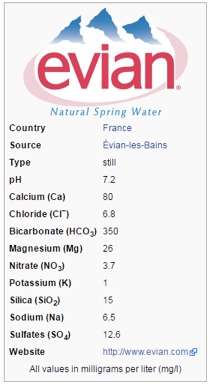

Analysis of the Evian water
Analysis of the Evian water#
Written by Svetlana Kyas (ETH Zurich) on March 31th, 2022.
Attention
Always make sure you are using the latest version of Reaktoro. Otherwise, some new features documented on this website will not work on your machine and you may receive unintuitive errors. Follow these update instructions to get the latest version of Reaktoro!
This tutorial demonstrates the use of Reaktoro to calculate the saturation indices of minerals for a water sample with composition and pH shown below:
 |
|---|
Evian water label, Source: wikipedia.org |
We start by defining the chemical system with just an aqueous phase:
from reaktoro import *
from math import *
db = PhreeqcDatabase("phreeqc.dat")
# Create an aqueous phase whose species are automatically determined from given list of elements
solution = AqueousPhase(speciate("C Ca Cl K Mg N Na S Si"))
solution.set(ActivityModelPhreeqc(db)) # Ensure consistency with PHREEQC by using the same activity model PHREEQC would use with the phreeqc.dat database!
# Create the chemical system with only the aqueous phase
system = ChemicalSystem(db, solution)
Next, we create an initial chemical state (in disequilibrium) representative of the water sample we are analysing:
state = ChemicalState(system)
state.set("H2O" , 1.000, "kg")
state.set("Ca+2" , 80.00, "mg")
state.set("Cl-" , 6.800, "mg")
state.set("HCO3-" , 350.0, "mg")
state.set("Mg+2" , 26.00, "mg")
state.set("NO3-" , 3.700, "mg")
state.set("K+" , 1.000, "mg")
state.set("Na+" , 6.500, "mg")
state.set("SO4-2" , 12.60, "mg")
state.set("H4SiO4", 24.00, "mg")
Note that the PHREEQC database phreeqc.dat does not have any aqueous species with formula SiO2. Therefore, we had to convert 15 mg of SiO2, with molar mass of 60.0843 g/mol, to the mass of H4SiO4, which has a molar mass of 96.1163 g/mol, in order to obtain the same molar amount of Si as in 15 mg of SiO2.
For our speciation calculation, we require an equilibrium solver that allow us to specify not only temperature and pressure but also the pH of the solution, which is done next:
# Specify the constraints we want to impose for the equilibrium calculation
specs = EquilibriumSpecs(system)
specs.temperature()
specs.pressure()
specs.pH()
# Create our equilibrium solver with the specifications above
solver = EquilibriumSolver(specs)
We can now equilibrate our initial state and determine its full composition:
# The conditions to be satisfied at the chemical equilibrium state
conditions = EquilibriumConditions(specs)
conditions.temperature(25.0, "celsius")
conditions.pressure(1.0, "atm")
conditions.pH(7.2)
# Equilibrate the solution with the given initial chemical state and desired conditions at equilibrium
result = solver.solve(state, conditions)
assert result.succeeded()
We can now evaluate the aqueous properties of the solution and determine the saturation indices of the minerals and gases:
aprops = AqueousProps(state)
print(aprops)
+--------------------------------------+-------------+-------+
| Property | Value | Unit |
+--------------------------------------+-------------+-------+
| Temperature | 298.1500 | K |
| Pressure | 1.0132 | bar |
| Ionic Strength (Effective) | 0.0088 | molal |
| Ionic Strength (Stoichiometric) | 0.0090 | molal |
| pH | 7.2000 | |
| pE | 12.1302 | |
| Eh | 0.7176 | V |
| Charge Molality | 8.1335e-04 | molal |
| Element Molality: | | |
| :: C | 5.7358e-03 | molal |
| :: N | 5.9670e-05 | molal |
| :: Na | 2.8274e-04 | molal |
| :: Mg | 1.0695e-03 | molal |
| :: Si | 2.4969e-04 | molal |
| :: S | 1.3116e-04 | molal |
| :: Cl | 1.9180e-04 | molal |
| :: K | 2.5574e-05 | molal |
| :: Ca | 1.9960e-03 | molal |
| Species Molality: | | |
| :: CO3-2 | 4.8970e-06 | molal |
| :: H+ | 6.8792e-08 | molal |
| :: CO2 | 6.3881e-04 | molal |
| :: (CO2)2 | 7.5055e-09 | molal |
| :: SO4-2 | 1.0336e-04 | molal |
| :: HS- | 9.9999e-17 | molal |
| :: H2S | 9.9999e-17 | molal |
| :: (H2S)2 | 9.9999e-17 | molal |
| :: HSO4- | 4.7650e-10 | molal |
| :: HCO3- | 4.9595e-03 | molal |
| :: CH4 | 9.9999e-17 | molal |
| :: Ca+2 | 1.8908e-03 | molal |
| :: CaCO3 | 7.2736e-06 | molal |
| :: CaHCO3+ | 8.1748e-05 | molal |
| :: CaHSO4+ | 7.4122e-12 | molal |
| :: CaOH+ | 3.7524e-09 | molal |
| :: CaSO4 | 1.6173e-05 | molal |
| :: Cl- | 1.9180e-04 | molal |
| :: NO3- | 5.9668e-05 | molal |
| :: H2 | 9.9999e-17 | molal |
| :: H4SiO4 | 2.4905e-04 | molal |
| :: H2SiO4-2 | 9.1821e-13 | molal |
| :: H3SiO4- | 6.4345e-07 | molal |
| :: Mg+2 | 1.0150e-03 | molal |
| :: K+ | 2.5562e-05 | molal |
| :: KSO4- | 1.2591e-08 | molal |
| :: MgCO3 | 2.2307e-06 | molal |
| :: MgHCO3+ | 4.0685e-05 | molal |
| :: MgOH+ | 4.4064e-08 | molal |
| :: MgSO4 | 1.1511e-05 | molal |
| :: N2 | 6.9447e-10 | molal |
| :: NH4+ | 9.9999e-17 | molal |
| :: NH3 | 9.9999e-17 | molal |
| :: NH4SO4- | 9.9999e-17 | molal |
| :: NO2- | 4.8473e-15 | molal |
| :: Na+ | 2.8197e-04 | molal |
| :: NaCO3- | 1.7631e-08 | molal |
| :: NaHCO3 | 6.4827e-07 | molal |
| :: OH- | 1.7720e-07 | molal |
| :: NaOH | 9.9999e-17 | molal |
| :: NaSO4- | 9.9364e-08 | molal |
| :: O2 | 1.7362e-09 | molal |
| :: S-2 | 9.9999e-17 | molal |
| Saturation Indices: | | |
| :: CH4(g) | -130.6484 | - |
| :: CO2(g) | -1.7313 | - |
| :: H2(g) | -38.7150 | - |
| :: H2O(g) | -1.5086 | - |
| :: H2S(g) | -131.6127 | - |
| :: N2(g) | -5.9875 | - |
| :: NH3(g) | -58.0784 | - |
| :: O2(g) | -5.8729 | - |
| :: Talc :: Mg3Si4O10(OH)2 | -2.0774 | - |
| :: Anhydrite :: CaSO4 | -2.7628 | - |
| :: Sylvite :: KCl | -9.2957 | - |
| :: Sulfur | -98.8232 | - |
| :: SiO2(a) | -0.8909 | - |
| :: Sepiolite(d) :: Mg2Si3O7.5OH:3H2O | -6.9800 | - |
| :: Sepiolite :: Mg2Si3O7.5OH:3H2O | -4.0800 | - |
| :: Quartz :: SiO2 | 0.3777 | - |
| :: Halite :: NaCl | -8.9218 | - |
| :: Gypsum :: CaSO4:2H2O | -2.4581 | - |
| :: Dolomite :: CaMg(CO3)2 | 0.0910 | - |
| :: Chrysotile :: Mg3Si2O5(OH)4 | -5.6742 | - |
| :: Chalcedony :: SiO2 | -0.0513 | - |
| :: Calcite :: CaCO3 | 0.1173 | - |
| :: Aragonite :: CaCO3 | -0.0266 | - |
| Saturation Ratios: | | |
| :: CH4(g) | 2.2469e-131 | - |
| :: CO2(g) | 1.8565e-02 | - |
| :: H2(g) | 1.9277e-39 | - |
| :: H2O(g) | 3.1002e-02 | - |
| :: H2S(g) | 2.4393e-132 | - |
| :: N2(g) | 1.0293e-06 | - |
| :: NH3(g) | 8.3492e-59 | - |
| :: O2(g) | 1.3401e-06 | - |
| :: Talc :: Mg3Si4O10(OH)2 | 8.3672e-03 | - |
| :: Anhydrite :: CaSO4 | 1.7266e-03 | - |
| :: Sylvite :: KCl | 5.0615e-10 | - |
| :: Sulfur | 1.5025e-99 | - |
| :: SiO2(a) | 1.2856e-01 | - |
| :: Sepiolite(d) :: Mg2Si3O7.5OH:3H2O | 1.0470e-07 | - |
| :: Sepiolite :: Mg2Si3O7.5OH:3H2O | 8.3168e-05 | - |
| :: Quartz :: SiO2 | 2.3863e+00 | - |
| :: Halite :: NaCl | 1.1972e-09 | - |
| :: Gypsum :: CaSO4:2H2O | 3.4826e-03 | - |
| :: Dolomite :: CaMg(CO3)2 | 1.2332e+00 | - |
| :: Chrysotile :: Mg3Si2O5(OH)4 | 2.1175e-06 | - |
| :: Chalcedony :: SiO2 | 8.8851e-01 | - |
| :: Calcite :: CaCO3 | 1.3101e+00 | - |
| :: Aragonite :: CaCO3 | 9.4061e-01 | - |
+--------------------------------------+-------------+-------+
The code below determines which minerals have a super-saturated state in the water sample (i.e., SI > 0):
print("Minerals for which the water is super-saturated:")
for species in aprops.saturationSpecies():
name = species.name()
SI = aprops.saturationIndex(name)
if SI > 0.0:
print(" - " + name)
Minerals for which the water is super-saturated:
- Quartz
- Dolomite
- Calcite